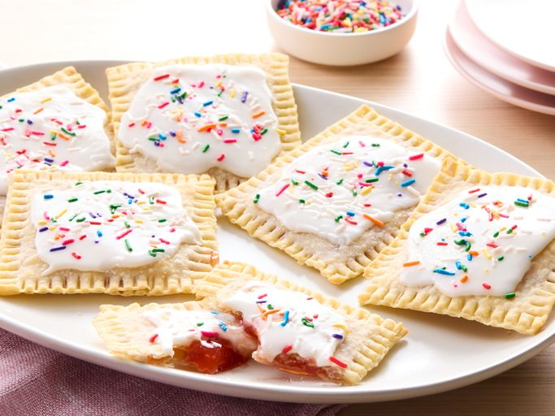

Home Made Top Tarts

Description
This is an easy pop tart recipe. I didn't think anything could be better than a toasted store-bought pastry tart in the morning — until I made these. Very, very easy to make! Kids (and adults) love them!
Ingredients
- 1 (15 ounce) package refrigerated pie crusts
- ½ cup strawberry jam, divided
- 2 cups confectioners' sugar
- 2 tablespoons milk
- ½ teaspoon vanilla extract
- 1 tablespoon water
- 1 tablespoon colored decorating sugar, or as needed
Steps
- Gather the ingredients. Preheat the oven to 425 degrees F (220 degrees C). Line 2 baking sheets with parchment paper.
- Unroll pie crusts, place on a lightly floured work surface, and roll slightly with a rolling pin to square the edges. Cut each crust into 8 equal-sized rectangles.
- Place about 1 tablespoon strawberry jam in the center of 8 squares. Spread jam out to within 1/4-inch of the edge. Top each with another pastry square and use a fork to crimp together, sealing in jam. Use a knife to trim pastries, if desired. Transfer filled pastries to the prepared baking sheets.
- Bake in the preheated oven until edges are lightly golden brown, about 7 minutes. Allow to cool on the baking sheets.
- Whisk confectioners' sugar, milk, and vanilla extract in a bowl to make a spreadable frosting. Add water, a few drops at a time, if needed. Spread cooled tarts with frosting and sprinkle with colored sugar.
- Serve and enjoy.
Home